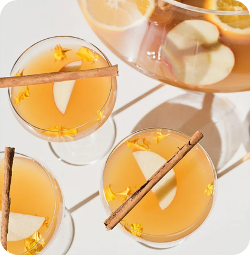
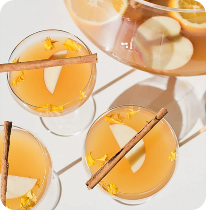
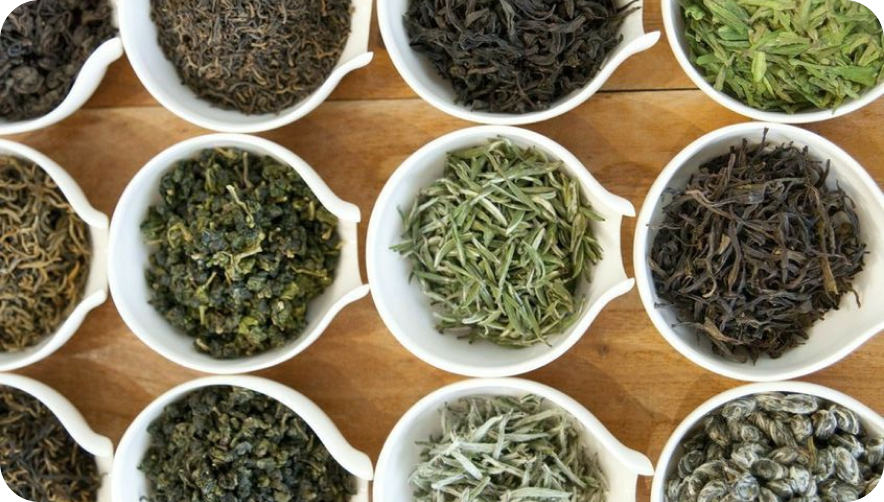
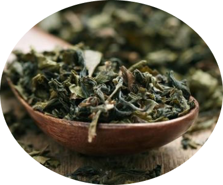
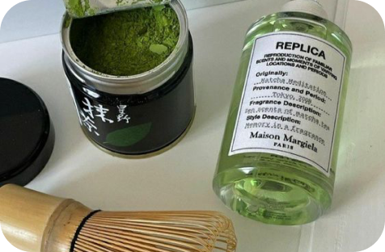
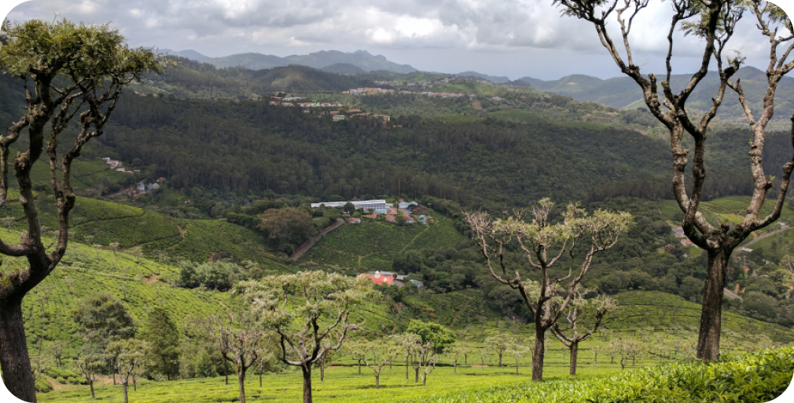

медиа-сервис про чай
Culttea
 
рецепты
и подборки чая
удобные фильтры полноценная библиотека
Ферментация
Регион
Действие и свойства
Всё о регионах, сложных процессах ферментации и способах заварки, от культурных традиций до новых и экспериментальных сортов.
важные статьи о чайной полке
А также другие важные советы. Интересный блог, новости чайного мира, статьи для любителей готовить или просто собирающих свою полку.

 
новости чайной культуры в нашем медиа
